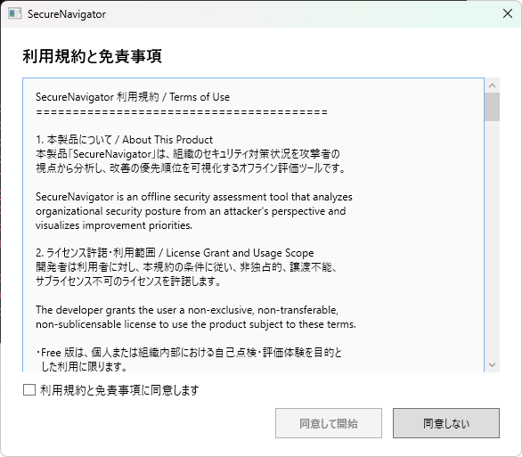

Chapter 1: はじめに
インストール・初回起動・利用規約の同意
動作要件
| 項目 | 要件 |
|---|---|
| OS | Windows 10 Version 2004 以降 / Windows 11 |
| ランタイム | WebView2 Runtime（PDF 出力に必要） |
| インターネット | 不要（完全オフライン動作） |
SecureNavigator は完全オフラインで動作します。インターネット接続が必要になるのは、Microsoft Store からのインストール・更新時のみです。
インストール方法
SecureNavigator は Microsoft Store からインストールします。
- Microsoft Store を開き、「SecureNavigator」を検索します。
- 「入手」ボタンをクリックしてインストールします。
- インストール完了後、スタートメニューから「SecureNavigator」を起動できます。
初回起動と利用規約
SecureNavigator を初めて起動すると、利用規約と免責事項の同意画面が表示されます。
- 利用規約と免責事項の内容を確認します。「利用規約を表示」から規約を開けます。
- 「利用規約と免責事項に同意します」にチェックを入れ、「同意して開始」ボタンをクリックすると、セッション選択画面に進みます。
- 「同意しない」を選択した場合は、先に進めません。

利用規約の同意画面
画面構成の概要
SecureNavigator は、診断の流れに沿って、ボタンで次の画面へ進みます。
| 画面 | 説明 |
|---|---|
| セッション選択 | 「新しい診断を開始する」で診断を作成するか、保存済みの診断を開きます。 |
| ヒアリング | セキュリティ対策に関する質問に回答する画面です。 |
| 診断結果サマリ | 「結果を見る」で開きます。診断結果のサマリ、弱点マップ、攻撃シナリオ、不足がみられる面とテーマ、フレームワークの参考確認を確認できます。 |
| ATT&CK テクニックカバレッジ（攻撃ビュー） | 「ATT&CK を見る」で開きます。攻撃の経路図、戦術チップ、状況別の群、用語の補足を確認できます。 |
| レポートプレビュー | 「レポートプレビュー」で開きます。プレビュー・保存・PDF 出力は Pro で利用できます。 |
| 設定 | 設定ボタンから開くダイアログです。表示言語の切替、ライセンスの確認、外部リンクの表示を行います。 |

セッション選択画面
Chapter 1: Getting Started
Installation, first launch, and terms acceptance
System Requirements
| Item | Requirement |
|---|---|
| OS | Windows 10 Version 2004 or later / Windows 11 |
| Runtime | WebView2 Runtime (required for PDF export) |
| Internet | Not required (fully offline operation) |
SecureNavigator operates entirely offline. An internet connection is only needed when installing or updating through the Microsoft Store.
Installation
SecureNavigator is installed from the Microsoft Store.
- Open the Microsoft Store and search for "SecureNavigator".
- Click "Get" to install the application.
- After installation, launch "SecureNavigator" from the Start menu.
First Launch and Terms Acceptance
When you launch SecureNavigator for the first time, the Terms of Use and Disclaimer acceptance screen is displayed.
- Review the Terms of Use and Disclaimer. Select "View Terms" to open them.
- Check "I agree to the Terms of Use and Disclaimer", then click "Accept and Start" to proceed to the session selection screen.
- If you select "Decline", you cannot proceed.
Screen Overview
SecureNavigator guides you through the screens with buttons, following the flow of the assessment.
| Screen | Description |
|---|---|
| Session Selection | Start a new assessment with "Start New Assessment", or open a saved assessment. |
| Hearing | Answer questions about your organization's security controls. |
| Diagnosis results summary | Opened with "View results". View the result summary, weakness map, attack scenarios, layers and themes with gaps, and framework reference checks. |
| ATT&CK technique coverage (Attack View) | Opened with "View ATT&CK". See the attack flow, tactic chips, status groups, and glossary. |
| Report Preview | Opened with "Report preview". Preview, saving, and PDF export are available in Pro. |
| Settings | A dialog opened from the settings button. Switch the display language, check the license, and open external links. |

Session selection screen